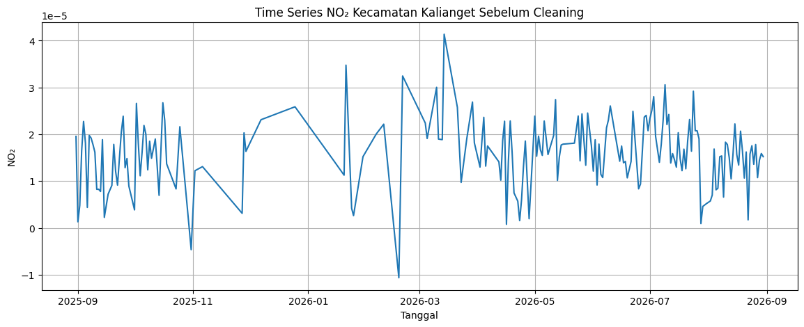
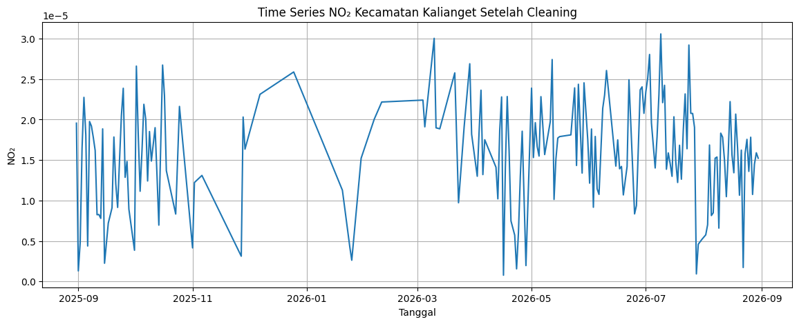

Analisis Data NO₂ Kecamatan Kalianget Berdasarkan Sentinel-5P Tahun 2025–2026#
1. Business Understanding#
1.1 Latar Belakang#
Kualitas udara merupakan salah satu bagian penting dari kondisi lingkungan yang perlu diperhatikan. Salah satu polutan yang dapat digunakan untuk melihat kondisi atmosfer adalah Nitrogen Dioxide (NO₂).
Pada tugas sebelumnya, data polutan diambil pada wilayah Kabupaten Sumenep dengan beberapa parameter polutan. Pada tugas sekarang, wilayah pengamatan dipersempit menjadi Kecamatan Kalianget dan polutan yang digunakan hanya NO₂.
Data NO₂ diperoleh dari satelit Sentinel-5P melalui platform openEO. Data kemudian diolah menjadi data time series harian untuk periode 31 Agustus 2025 sampai 31 Agustus 2026.
Setelah data diperoleh, dilakukan pemeriksaan dan pembersihan data berupa deteksi outlier dan penanganan missing value. Data yang sudah bersih kemudian digunakan untuk ekstraksi 68 fitur menggunakan library TSFEL, lalu hasil ekstraksi disimpan dalam file CSV dan disiapkan untuk dimasukkan ke database PostgreSQL Aiven.
1.2 Tujuan#
Tujuan pengerjaan adalah:
Mengambil data NO₂ Sentinel-5P pada wilayah Kecamatan Kalianget.
Menggunakan periode data 31 Agustus 2025 sampai 31 Agustus 2026.
Membentuk data NO₂ menjadi time series harian.
Mendeteksi outlier dan missing value.
Melakukan imputasi pada nilai yang hilang.
Mengekstraksi 68 fitur dari data NO₂ menggunakan TSFEL.
Menyimpan hasil ekstraksi dan menyiapkannya untuk dimasukkan ke Aiven PostgreSQL.
2. Data Understanding#
2.1 Sumber Data#
Data yang digunakan berasal dari Sentinel-5P dengan instrumen TROPOMI. Pengambilan data dilakukan melalui platform openEO menggunakan koleksi:
SENTINEL_5P_L2
Pada tugas ini hanya digunakan satu parameter, yaitu:
NO₂ (Nitrogen Dioxide)
2.2 Wilayah dan Periode Data#
Wilayah yang dianalisis adalah:
Kecamatan Kalianget, Kabupaten Sumenep, Jawa Timur
Wilayah tidak lagi menggunakan bounding box Kabupaten Sumenep seperti pada tugas sebelumnya. Pada tugas ini digunakan GeoJSON geografis Kecamatan Kalianget yang diberikan.
Periode data:
31 Agustus 2025 – 31 Agustus 2026
2.3 Pengambilan Data NO₂#
Sebelum masuk ke langkah pertama, kita install dulu pustaka openeo supaya Python dapat terhubung ke server openEO Copernicus Data Space.
pip install openeo
Requirement already satisfied: openeo in /usr/local/python/3.12.1/lib/python3.12/site-packages (0.51.0)
Requirement already satisfied: requests>=2.26.0 in /home/codespace/.local/lib/python3.12/site-packages (from openeo) (2.32.5)
Requirement already satisfied: urllib3>=1.9.0 in /home/codespace/.local/lib/python3.12/site-packages (from openeo) (2.6.3)
Requirement already satisfied: shapely>=1.6.4 in /usr/local/python/3.12.1/lib/python3.12/site-packages (from openeo) (2.1.2)
Requirement already satisfied: numpy>=1.17.0 in /usr/local/python/3.12.1/lib/python3.12/site-packages (from openeo) (2.5.2)
Requirement already satisfied: xarray<2025.01.2,>=0.12.3 in /usr/local/python/3.12.1/lib/python3.12/site-packages (from openeo) (2025.1.1)
Requirement already satisfied: pandas<3.0.0,>0.20.0 in /usr/local/python/3.12.1/lib/python3.12/site-packages (from openeo) (2.3.3)
Requirement already satisfied: pystac>=1.5.0 in /usr/local/python/3.12.1/lib/python3.12/site-packages (from openeo) (1.15.2)
Requirement already satisfied: deprecated>=1.2.12 in /usr/local/python/3.12.1/lib/python3.12/site-packages (from openeo) (1.3.1)
Requirement already satisfied: geopandas>=0.14 in /usr/local/python/3.12.1/lib/python3.12/site-packages (from openeo) (1.1.4)
Requirement already satisfied: python-dateutil>=2.8.2 in /home/codespace/.local/lib/python3.12/site-packages (from pandas<3.0.0,>0.20.0->openeo) (2.9.0.post0)
Requirement already satisfied: pytz>=2020.1 in /usr/local/python/3.12.1/lib/python3.12/site-packages (from pandas<3.0.0,>0.20.0->openeo) (2026.3.post1)
Requirement already satisfied: tzdata>=2022.7 in /home/codespace/.local/lib/python3.12/site-packages (from pandas<3.0.0,>0.20.0->openeo) (2025.3)
Requirement already satisfied: packaging>=23.2 in /home/codespace/.local/lib/python3.12/site-packages (from xarray<2025.01.2,>=0.12.3->openeo) (26.0)
Requirement already satisfied: wrapt<3,>=1.10 in /usr/local/python/3.12.1/lib/python3.12/site-packages (from deprecated>=1.2.12->openeo) (2.4.0)
Requirement already satisfied: pyogrio>=0.7.2 in /usr/local/python/3.12.1/lib/python3.12/site-packages (from geopandas>=0.14->openeo) (0.13.0)
Requirement already satisfied: pyproj>=3.5.0 in /usr/local/python/3.12.1/lib/python3.12/site-packages (from geopandas>=0.14->openeo) (3.7.2)
Requirement already satisfied: certifi in /home/codespace/.local/lib/python3.12/site-packages (from pyogrio>=0.7.2->geopandas>=0.14->openeo) (2026.2.25)
Requirement already satisfied: pystac-core<2,>=1.15.0 in /usr/local/python/3.12.1/lib/python3.12/site-packages (from pystac>=1.5.0->openeo) (1.15.2)
Requirement already satisfied: pystac-ext-classification in /usr/local/python/3.12.1/lib/python3.12/site-packages (from pystac>=1.5.0->openeo) (2.0.1)
Requirement already satisfied: pystac-ext-datacube in /usr/local/python/3.12.1/lib/python3.12/site-packages (from pystac>=1.5.0->openeo) (2.2.1)
Requirement already satisfied: pystac-ext-eo in /usr/local/python/3.12.1/lib/python3.12/site-packages (from pystac>=1.5.0->openeo) (1.1.1)
Requirement already satisfied: pystac-ext-file in /usr/local/python/3.12.1/lib/python3.12/site-packages (from pystac>=1.5.0->openeo) (2.1.1)
Requirement already satisfied: pystac-ext-grid in /usr/local/python/3.12.1/lib/python3.12/site-packages (from pystac>=1.5.0->openeo) (1.1.1)
Requirement already satisfied: pystac-ext-item-assets in /usr/local/python/3.12.1/lib/python3.12/site-packages (from pystac>=1.5.0->openeo) (1.0.1)
Requirement already satisfied: pystac-ext-label in /usr/local/python/3.12.1/lib/python3.12/site-packages (from pystac>=1.5.0->openeo) (1.0.2)
Requirement already satisfied: pystac-ext-mgrs in /usr/local/python/3.12.1/lib/python3.12/site-packages (from pystac>=1.5.0->openeo) (1.0.1)
Requirement already satisfied: pystac-ext-mlm in /usr/local/python/3.12.1/lib/python3.12/site-packages (from pystac>=1.5.0->openeo) (1.4.1)
Requirement already satisfied: pystac-ext-pointcloud in /usr/local/python/3.12.1/lib/python3.12/site-packages (from pystac>=1.5.0->openeo) (1.0.1)
Requirement already satisfied: pystac-ext-projection in /usr/local/python/3.12.1/lib/python3.12/site-packages (from pystac>=1.5.0->openeo) (2.0.1)
Requirement already satisfied: pystac-ext-raster in /usr/local/python/3.12.1/lib/python3.12/site-packages (from pystac>=1.5.0->openeo) (1.1.1)
Requirement already satisfied: pystac-ext-render in /usr/local/python/3.12.1/lib/python3.12/site-packages (from pystac>=1.5.0->openeo) (2.0.0)
Requirement already satisfied: pystac-ext-sar in /usr/local/python/3.12.1/lib/python3.12/site-packages (from pystac>=1.5.0->openeo) (1.0.1)
Requirement already satisfied: pystac-ext-sat in /usr/local/python/3.12.1/lib/python3.12/site-packages (from pystac>=1.5.0->openeo) (1.0.1)
Requirement already satisfied: pystac-ext-scientific in /usr/local/python/3.12.1/lib/python3.12/site-packages (from pystac>=1.5.0->openeo) (1.0.1)
Requirement already satisfied: pystac-ext-storage in /usr/local/python/3.12.1/lib/python3.12/site-packages (from pystac>=1.5.0->openeo) (2.0.1)
Requirement already satisfied: pystac-ext-table in /usr/local/python/3.12.1/lib/python3.12/site-packages (from pystac>=1.5.0->openeo) (1.2.1)
Requirement already satisfied: pystac-ext-timestamps in /usr/local/python/3.12.1/lib/python3.12/site-packages (from pystac>=1.5.0->openeo) (1.1.1)
Requirement already satisfied: pystac-ext-version in /usr/local/python/3.12.1/lib/python3.12/site-packages (from pystac>=1.5.0->openeo) (1.2.1)
Requirement already satisfied: pystac-ext-view in /usr/local/python/3.12.1/lib/python3.12/site-packages (from pystac>=1.5.0->openeo) (1.0.1)
Requirement already satisfied: pystac-ext-xarray-assets in /usr/local/python/3.12.1/lib/python3.12/site-packages (from pystac>=1.5.0->openeo) (1.0.1)
Requirement already satisfied: six>=1.5 in /home/codespace/.local/lib/python3.12/site-packages (from python-dateutil>=2.8.2->pandas<3.0.0,>0.20.0->openeo) (1.17.0)
Requirement already satisfied: charset_normalizer<4,>=2 in /home/codespace/.local/lib/python3.12/site-packages (from requests>=2.26.0->openeo) (3.4.5)
Requirement already satisfied: idna<4,>=2.5 in /home/codespace/.local/lib/python3.12/site-packages (from requests>=2.26.0->openeo) (3.11)
[notice] A new release of pip is available: 26.0.1 -> 26.2.1
[notice] To update, run: python3 -m pip install --upgrade pip
Note: you may need to restart the kernel to use updated packages.
Setelah library berhasil di-install, sekarang kita import openeo.
import openeo
Perintah import openeo digunakan untuk memanggil library openEO yang sudah di-install, sehingga fungsi-fungsi openEO dapat digunakan pada kode Python selanjutnya.
Setelah library di-import, sekarang kita memasang koneksi ke server Copernicus Data Space.
connection = openeo.connect("openeo.dataspace.copernicus.eu").authenticate_oidc()
[##################################---] ⌛ Authorization pending---------------------------------------------------------------------------
KeyboardInterrupt Traceback (most recent call last)
Cell In[3], line 1
----> 1 connection = openeo.connect("openeo.dataspace.copernicus.eu").authenticate_oidc()
File /usr/local/python/3.12.1/lib/python3.12/site-packages/openeo/rest/connection.py:697, in Connection.authenticate_oidc(self, provider_id, client_id, client_secret, store_refresh_token, use_pkce, display, max_poll_time)
693 _log.info("Trying device code flow.")
694 authenticator = OidcDeviceAuthenticator(
695 client_info=client_info, use_pkce=use_pkce, display=display, max_poll_time=max_poll_time
696 )
--> 697 con = self._authenticate_oidc(
698 authenticator,
699 provider_id=provider_id,
700 store_refresh_token=store_refresh_token,
701 # TODO: expose `auto_renew_from_refresh_token` directly as option instead of reusing `store_refresh_token` arg?
702 auto_renew_from_refresh_token=store_refresh_token,
703 )
704 print("Authenticated using device code flow.")
705 return con
File /usr/local/python/3.12.1/lib/python3.12/site-packages/openeo/rest/connection.py:413, in Connection._authenticate_oidc(self, authenticator, provider_id, store_refresh_token, auto_renew_from_refresh_token, fallback_refresh_token, oidc_auth_renewer)
409 """
410 Authenticate through OIDC and set up bearer token (based on OIDC access_token) for further requests.
411 """
412 request_refresh_token = store_refresh_token or (not oidc_auth_renewer and auto_renew_from_refresh_token)
--> 413 tokens = authenticator.get_tokens(request_refresh_token=request_refresh_token)
414 _log.info("Obtained tokens: {t}".format(t=[k for k, v in tokens._asdict().items() if v]))
416 refresh_token = tokens.refresh_token or fallback_refresh_token
File /usr/local/python/3.12.1/lib/python3.12/site-packages/openeo/rest/auth/oidc.py:928, in OidcDeviceAuthenticator.get_tokens(self, request_refresh_token)
926 while elapsed() <= self._max_poll_time:
927 poll_ui.show_progress()
--> 928 time.sleep(sleep)
930 if elapsed() >= next_poll:
931 log.debug(
932 f"Doing {self.grant_type!r} token request {token_endpoint!r} with post data fields {list(post_data.keys())!r} (client_id {self.client_id!r})"
933 )
KeyboardInterrupt:
Jika muncul link autentikasi, buka link tersebut, login menggunakan akun Copernicus Data Space, lalu tekan Allow/Authorize. Setelah muncul pesan bahwa autentikasi berhasil, proses dapat dilanjutkan.
3. Menentukan Geografis Kecamatan Kalianget#
Berikut adalah batas geografis Kecamatan Kalianget yang diberikan. GeoJSON ini digunakan sebagai AOI (Area of Interest) pada proses pengambilan dan agregasi data.
aoi = {
"type": "FeatureCollection",
"features": [
{
"type": "Feature",
"properties": {},
"geometry": {
"type": "Polygon",
"coordinates": [
[
[113.9513673, -7.0460006],
[113.946438, -7.0564837],
[113.9372051, -7.0622299],
[113.9028907, -7.0762189],
[113.873057, -7.0701868],
[113.8523076, -7.0613923],
[113.8864566, -7.0268656],
[113.9009699, -7.0291957],
[113.9167638, -7.0281366],
[113.9513673, -7.0460006]
]
]
}
}
]
}
print("GeoJSON Kecamatan Kalianget siap digunakan.")
GeoJSON Kecamatan Kalianget siap digunakan.
Untuk membatasi pencarian data dari server, digunakan bounding box yang berasal dari koordinat terluar GeoJSON. Bounding box ini bukan pengganti GeoJSON. Polygon GeoJSON tetap digunakan pada aggregate_spatial().
spatial_extent = {
"west": 113.8523076,
"south": -7.0762189,
"east": 113.9513673,
"north": -7.0268656
}
print(spatial_extent)
{'west': 113.8523076, 'south': -7.0762189, 'east': 113.9513673, 'north': -7.0268656}
4. Mengambil Data NO₂ Sentinel-5P#
Pada tugas sebelumnya, setiap polutan dibuat dengan pemanggilan load_collection() masing-masing. Karena tugas sekarang hanya membutuhkan NO₂, maka cukup dibuat satu proses untuk band NO2.
Tanggal akhir proses dibuat 2026-09-01 supaya tanggal 31-08-2026 dapat masuk ke interval pengambilan data. Setelah data menjadi DataFrame, tanggal tetap difilter sampai 31-08-2026.
s5NO2 = connection.load_collection(
"SENTINEL_5P_L2",
temporal_extent=["2025-08-31", "2026-09-01"],
spatial_extent=spatial_extent,
bands=["NO2"],
)
print("Data NO₂ berhasil dipanggil.")
Data NO₂ berhasil dipanggil.
5. Membuat Data Harian#
Sama seperti alur pada tugas sebelumnya, data dirata-ratakan berdasarkan waktu terlebih dahulu sehingga diperoleh nilai rata-rata NO₂ per hari.
s5p_NO2_daily = s5NO2.aggregate_temporal_period(
reducer="mean",
period="day"
)
print("Agregasi harian NO₂ selesai.")
Agregasi harian NO₂ selesai.
6. Agregasi Berdasarkan Geografis Kecamatan Kalianget#
Setelah data menjadi data harian, dilakukan agregasi spasial menggunakan polygon Kecamatan Kalianget. Tujuannya adalah merangkum nilai NO₂ dari area Kecamatan Kalianget menjadi satu nilai untuk setiap tanggal.
s5p_NO2_aoi = s5p_NO2_daily.aggregate_spatial(
reducer="mean",
geometries=aoi
)
print("Agregasi spasial Kecamatan Kalianget selesai.")
Agregasi spasial Kecamatan Kalianget selesai.
7. Menjalankan Proses dan Menyimpan NetCDF#
Setelah alur pengolahan selesai dikonfigurasi, proses dikirim ke server Copernicus sebagai batch job. Hasil pengolahan NO₂ disimpan dalam file NetCDF.
job_NO2 = s5p_NO2_aoi.execute_batch(
title="NO2 Kecamatan Kalianget 2025-2026",
outputfile="NO2_Kalianget_2025_2026.nc"
)
print("Job NO₂ selesai dijalankan.")
0:00:00 Job 'j-2609131201024957867c029f690029a0': send 'start'
0:00:02 Job 'j-2609131201024957867c029f690029a0': queued (progress 0%)
0:00:07 Job 'j-2609131201024957867c029f690029a0': queued (progress 0%)
0:00:14 Job 'j-2609131201024957867c029f690029a0': queued (progress 0%)
0:00:22 Job 'j-2609131201024957867c029f690029a0': queued (progress 0%)
0:00:32 Job 'j-2609131201024957867c029f690029a0': queued (progress 0%)
0:00:45 Job 'j-2609131201024957867c029f690029a0': queued (progress 0%)
0:01:00 Job 'j-2609131201024957867c029f690029a0': queued (progress 0%)
0:01:20 Job 'j-2609131201024957867c029f690029a0': running (progress N/A)
0:01:44 Job 'j-2609131201024957867c029f690029a0': running (progress N/A)
0:02:14 Job 'j-2609131201024957867c029f690029a0': running (progress N/A)
0:02:51 Job 'j-2609131201024957867c029f690029a0': running (progress N/A)
0:03:38 Job 'j-2609131201024957867c029f690029a0': finished (progress 100%)
Job NO₂ selesai dijalankan.
8. Membaca File NetCDF#
Sebelum membaca file .nc, kita install library netCDF4 yang digunakan untuk membuka dan membaca data NetCDF.
pip install netCDF4
Collecting netCDF4
Downloading netcdf4-1.7.4-cp311-abi3-manylinux_2_27_x86_64.manylinux_2_28_x86_64.whl.metadata (2.1 kB)
Collecting cftime (from netCDF4)
Downloading cftime-1.6.5-cp313-cp313-manylinux2014_x86_64.manylinux_2_17_x86_64.whl.metadata (8.7 kB)
Requirement already satisfied: certifi in /usr/local/lib/python3.13/dist-packages (from netCDF4) (2026.7.22)
Requirement already satisfied: numpy>=1.21.2 in /usr/local/lib/python3.13/dist-packages (from netCDF4) (2.1.3)
Downloading netcdf4-1.7.4-cp311-abi3-manylinux_2_27_x86_64.manylinux_2_28_x86_64.whl (10.1 MB)
━━━━━━━━━━━━━━━━━━━━━━━━━━━━━━━━━━━━━━━━ 10.1/10.1 MB 66.2 MB/s eta 0:00:00
?25hDownloading cftime-1.6.5-cp313-cp313-manylinux2014_x86_64.manylinux_2_17_x86_64.whl (1.6 MB)
━━━━━━━━━━━━━━━━━━━━━━━━━━━━━━━━━━━━━━━━ 1.6/1.6 MB 74.4 MB/s eta 0:00:00
?25hInstalling collected packages: cftime, netCDF4
Successfully installed cftime-1.6.5 netCDF4-1.7.4
Library netCDF4, numpy, dan pandas kemudian di-import untuk membaca data dan mengubahnya menjadi DataFrame.
import netCDF4
import numpy as np
import pandas as pd
dsNO2 = netCDF4.Dataset("NO2_Kalianget_2025_2026.nc")
print("File NetCDF NO₂ berhasil dibuka.")
File NetCDF NO₂ berhasil dibuka.
9. Mengubah Data NetCDF Menjadi DataFrame dan di simpan dalam bentuk CSV#
Nilai NO₂ dan waktu diambil dari file NetCDF. Waktu dikonversi menjadi format tanggal, kemudian disusun menjadi DataFrame dengan dua kolom:
dateNO2
no2 = dsNO2.variables["NO2"][:].squeeze()
timeNO2 = dsNO2.variables["t"][:]
try:
time_units = dsNO2.variables["t"].units
dates = netCDF4.num2date(
timeNO2,
units=time_units
)
except Exception:
dates = timeNO2
new_dates = []
for i in range(len(dates)):
new_date = dates[i].strftime("%Y-%m-%d")
new_dates.append(new_date)
df = pd.DataFrame({
"date": new_dates,
"NO2": no2
})
df["date"] = pd.to_datetime(df["date"])
df["NO2"] = pd.to_numeric(
df["NO2"],
errors="coerce"
)
df = df.sort_values(
"date"
).reset_index(drop=True)
df = df[
(df["date"] >= "2025-08-31") &
(df["date"] <= "2026-08-31")
].reset_index(drop=True)
print("==============================================")
print("DATA NO₂ KECAMATAN KALIANGET")
print("==============================================")
print(
"Periode:",
df["date"].min().strftime("%Y-%m-%d"),
"sampai",
df["date"].max().strftime("%Y-%m-%d")
)
print("Jumlah baris:", len(df))
print("Kolom:", df.columns.tolist())
display(df.head())
display(df.tail())
nama_file = "NO2_Kalianget_2025_2026.csv"
df.to_csv(
nama_file,
index=False
)
print("\nFile CSV berhasil dibuat:")
print(nama_file)
files.download(nama_file)
==============================================
DATA NO₂ KECAMATAN KALIANGET
==============================================
Periode: 2025-08-31 sampai 2026-08-30
Jumlah baris: 196
Kolom: ['date', 'NO2']
| date | NO2 | |
|---|---|---|
| 0 | 2025-08-31 | 0.000020 |
| 1 | 2025-09-01 | 0.000001 |
| 2 | 2025-09-02 | 0.000005 |
| 3 | 2025-09-03 | 0.000016 |
| 4 | 2025-09-04 | 0.000023 |
| date | NO2 | |
|---|---|---|
| 191 | 2026-08-26 | 0.000018 |
| 192 | 2026-08-27 | 0.000011 |
| 193 | 2026-08-28 | 0.000014 |
| 194 | 2026-08-29 | 0.000016 |
| 195 | 2026-08-30 | 0.000015 |
File CSV berhasil dibuat:
NO2_Kalianget_2025_2026.csv
10. Pembersihan Data#
Sesuai tugas baru, sebelum masuk ke ekstraksi fitur TSFEL, data diperiksa terlebih dahulu untuk mengetahui apakah terdapat missing value dan outlier.
print("Jumlah data:", len(df))
print("Missing value NO2:", df["NO2"].isna().sum())
display(df["NO2"].describe())
Jumlah data: 196
Missing value NO2: 0
| NO2 | |
|---|---|
| count | 196.000000 |
| mean | 0.000016 |
| std | 0.000007 |
| min | -0.000011 |
| 25% | 0.000012 |
| 50% | 0.000016 |
| 75% | 0.000020 |
| max | 0.000041 |
10.1 Visualisasi Data Sebelum Cleaning#
import matplotlib.pyplot as plt
plt.figure(figsize=(14, 5))
plt.plot(df["date"], df["NO2"])
plt.title("Time Series NO₂ Kecamatan Kalianget Sebelum Cleaning")
plt.xlabel("Tanggal")
plt.ylabel("NO₂")
plt.grid(True)
plt.show()

10.2 Deteksi Outlier Menggunakan IQR#
Metode yang digunakan untuk mendeteksi outlier adalah Interquartile Range (IQR).
Rumus:
Batas bawah:
Batas atas:
Nilai yang berada di luar batas tersebut dianggap sebagai outlier.
Q1 = df["NO2"].quantile(0.25)
Q3 = df["NO2"].quantile(0.75)
IQR = Q3 - Q1
lower_bound = Q1 - 1.5 * IQR
upper_bound = Q3 + 1.5 * IQR
outlier_mask = (
(df["NO2"] < lower_bound) |
(df["NO2"] > upper_bound)
)
print("Q1 =", Q1)
print("Q3 =", Q3)
print("IQR =", IQR)
print("Batas bawah =", lower_bound)
print("Batas atas =", upper_bound)
print("Jumlah outlier =", outlier_mask.sum())
display(df.loc[outlier_mask, ["date", "NO2"]])
Q1 = 1.1894247904820077e-05
Q3 = 2.0112315951337223e-05
IQR = 8.218068046517146e-06
Batas bawah = -4.3285416495564277e-07
Batas atas = 3.243941802111294e-05
Jumlah outlier = 5
| date | NO2 | |
|---|---|---|
| 46 | 2025-10-31 | -0.000005 |
| 57 | 2026-01-21 | 0.000035 |
| 63 | 2026-02-18 | -0.000011 |
| 64 | 2026-02-20 | 0.000032 |
| 70 | 2026-03-14 | 0.000041 |
10.3 Menangani Outlier#
Outlier tidak langsung dihapus karena data ini merupakan time series. Nilai outlier diubah menjadi NaN, kemudian akan diisi menggunakan interpolasi berdasarkan waktu.
df_clean = df.copy()
df_clean.loc[outlier_mask, "NO2"] = np.nan
print("Jumlah missing setelah outlier ditandai:",
df_clean["NO2"].isna().sum())
Jumlah missing setelah outlier ditandai: 5
10.4 Imputasi Missing Value#
Missing value diisi menggunakan interpolasi waktu. Untuk nilai kosong yang berada di awal atau akhir data, digunakan ffill() dan bfill() sebagai pengaman.
df_clean = (
df_clean
.set_index("date")
.interpolate(method="time")
.ffill()
.bfill()
.reset_index()
)
print("Jumlah missing setelah imputasi:",
df_clean["NO2"].isna().sum())
Jumlah missing setelah imputasi: 0
10.5 Pemeriksaan Setelah Cleaning#
Data diperiksa kembali untuk memastikan tidak terdapat missing value dan outlier berdasarkan metode IQR.
Q1_final = df_clean["NO2"].quantile(0.25)
Q3_final = df_clean["NO2"].quantile(0.75)
IQR_final = Q3_final - Q1_final
lower_final = Q1_final - 1.5 * IQR_final
upper_final = Q3_final + 1.5 * IQR_final
final_outlier_mask = (
(df_clean["NO2"] < lower_final) |
(df_clean["NO2"] > upper_final)
)
jumlah_missing_final = df_clean["NO2"].isna().sum()
jumlah_outlier_final = final_outlier_mask.sum()
print("==============================================")
print("HASIL PEMERIKSAAN DATA SETELAH CLEANING")
print("==============================================")
print("Missing value :", jumlah_missing_final)
print("Outlier :", jumlah_outlier_final)
if jumlah_missing_final == 0 and jumlah_outlier_final == 0:
print("Data sudah bersih dan siap untuk ekstraksi TSFEL.")
else:
print("Masih terdapat data yang perlu diperiksa.")
==============================================
HASIL PEMERIKSAAN DATA SETELAH CLEANING
==============================================
Missing value : 0
Outlier : 0
Data sudah bersih dan siap untuk ekstraksi TSFEL.
10.6 Visualisasi Data Setelah Cleaning#
plt.figure(figsize=(14, 5))
plt.plot(df_clean["date"], df_clean["NO2"])
plt.title("Time Series NO₂ Kecamatan Kalianget Setelah Cleaning")
plt.xlabel("Tanggal")
plt.ylabel("NO₂")
plt.grid(True)
plt.show()

from google.colab import files
nama_file = "NO2_Kalianget_clean.csv"
df_clean.to_csv(
nama_file,
index=False,
encoding="utf-8-sig"
)
print("Data bersih disimpan sebagai:", nama_file)
files.download(nama_file)
Data bersih disimpan sebagai: NO2_Kalianget_clean.csv
11. Ekstraksi Fitur Menggunakan TSFEL#
Setelah data NO₂ bersih, data digunakan untuk ekstraksi fitur menggunakan library TSFEL (Time Series Feature Extraction Library).
Pada tugas ini digunakan daftar 68 fitur yang telah ditentukan.
pip install tsfel
Requirement already satisfied: tsfel in /usr/local/lib/python3.13/dist-packages (0.2.0)
Requirement already satisfied: ipython>=7.4.0 in /usr/local/lib/python3.13/dist-packages (from tsfel) (7.34.0)
Requirement already satisfied: numpy>=1.18.5 in /usr/local/lib/python3.13/dist-packages (from tsfel) (2.1.3)
Requirement already satisfied: pandas>=1.5.3 in /usr/local/lib/python3.13/dist-packages (from tsfel) (2.2.3)
Requirement already satisfied: PyWavelets>=1.4.1 in /usr/local/lib/python3.13/dist-packages (from tsfel) (1.9.0)
Requirement already satisfied: requests>=2.31.0 in /usr/local/lib/python3.13/dist-packages (from tsfel) (2.32.4)
Requirement already satisfied: scikit-learn>=0.21.3 in /usr/local/lib/python3.13/dist-packages (from tsfel) (1.6.1)
Requirement already satisfied: scipy>=1.7.3 in /usr/local/lib/python3.13/dist-packages (from tsfel) (1.16.3)
Requirement already satisfied: setuptools>=47.1.1 in /usr/local/lib/python3.13/dist-packages (from tsfel) (80.10.2)
Requirement already satisfied: statsmodels>=0.12.0 in /usr/local/lib/python3.13/dist-packages (from tsfel) (0.15.0)
Requirement already satisfied: jedi>=0.16 in /usr/local/lib/python3.13/dist-packages (from ipython>=7.4.0->tsfel) (0.20.0)
Requirement already satisfied: decorator in /usr/local/lib/python3.13/dist-packages (from ipython>=7.4.0->tsfel) (4.4.2)
Requirement already satisfied: pickleshare in /usr/local/lib/python3.13/dist-packages (from ipython>=7.4.0->tsfel) (0.7.5)
Requirement already satisfied: traitlets>=4.2 in /usr/local/lib/python3.13/dist-packages (from ipython>=7.4.0->tsfel) (5.7.1)
Requirement already satisfied: prompt-toolkit!=3.0.0,!=3.0.1,<3.1.0,>=2.0.0 in /usr/local/lib/python3.13/dist-packages (from ipython>=7.4.0->tsfel) (3.0.53)
Requirement already satisfied: pygments in /usr/local/lib/python3.13/dist-packages (from ipython>=7.4.0->tsfel) (2.21.0)
Requirement already satisfied: backcall in /usr/local/lib/python3.13/dist-packages (from ipython>=7.4.0->tsfel) (0.2.0)
Requirement already satisfied: matplotlib-inline in /usr/local/lib/python3.13/dist-packages (from ipython>=7.4.0->tsfel) (0.2.2)
Requirement already satisfied: pexpect>4.3 in /usr/local/lib/python3.13/dist-packages (from ipython>=7.4.0->tsfel) (4.9.0)
Requirement already satisfied: python-dateutil>=2.8.2 in /usr/local/lib/python3.13/dist-packages (from pandas>=1.5.3->tsfel) (2.9.0.post0)
Requirement already satisfied: pytz>=2020.1 in /usr/local/lib/python3.13/dist-packages (from pandas>=1.5.3->tsfel) (2025.2)
Requirement already satisfied: tzdata>=2022.7 in /usr/local/lib/python3.13/dist-packages (from pandas>=1.5.3->tsfel) (2026.3)
Requirement already satisfied: charset_normalizer<4,>=2 in /usr/local/lib/python3.13/dist-packages (from requests>=2.31.0->tsfel) (3.4.9)
Requirement already satisfied: idna<4,>=2.5 in /usr/local/lib/python3.13/dist-packages (from requests>=2.31.0->tsfel) (3.19)
Requirement already satisfied: urllib3<3,>=1.21.1 in /usr/local/lib/python3.13/dist-packages (from requests>=2.31.0->tsfel) (2.5.0)
Requirement already satisfied: certifi>=2017.4.17 in /usr/local/lib/python3.13/dist-packages (from requests>=2.31.0->tsfel) (2026.7.22)
Requirement already satisfied: joblib>=1.2.0 in /usr/local/lib/python3.13/dist-packages (from scikit-learn>=0.21.3->tsfel) (1.6.0)
Requirement already satisfied: threadpoolctl>=3.1.0 in /usr/local/lib/python3.13/dist-packages (from scikit-learn>=0.21.3->tsfel) (3.6.0)
Requirement already satisfied: patsy>=0.5.6 in /usr/local/lib/python3.13/dist-packages (from statsmodels>=0.12.0->tsfel) (1.0.3)
Requirement already satisfied: packaging>=21.3 in /usr/local/lib/python3.13/dist-packages (from statsmodels>=0.12.0->tsfel) (26.3)
Requirement already satisfied: formulaic>=1.1.0 in /usr/local/lib/python3.13/dist-packages (from statsmodels>=0.12.0->tsfel) (1.2.2)
Requirement already satisfied: interface-meta>=1.2.0 in /usr/local/lib/python3.13/dist-packages (from formulaic>=1.1.0->statsmodels>=0.12.0->tsfel) (2.0.1)
Requirement already satisfied: narwhals>=1.17 in /usr/local/lib/python3.13/dist-packages (from formulaic>=1.1.0->statsmodels>=0.12.0->tsfel) (2.25.0)
Requirement already satisfied: typing-extensions>=4.2.0 in /usr/local/lib/python3.13/dist-packages (from formulaic>=1.1.0->statsmodels>=0.12.0->tsfel) (4.16.0)
Requirement already satisfied: wrapt>=1.17.0rc1 in /usr/local/lib/python3.13/dist-packages (from formulaic>=1.1.0->statsmodels>=0.12.0->tsfel) (2.4.0)
Requirement already satisfied: parso<0.9.0,>=0.8.6 in /usr/local/lib/python3.13/dist-packages (from jedi>=0.16->ipython>=7.4.0->tsfel) (0.8.7)
Requirement already satisfied: cloudpickle>=3.0 in /usr/local/lib/python3.13/dist-packages (from joblib>=1.2.0->scikit-learn>=0.21.3->tsfel) (3.1.2)
Requirement already satisfied: ptyprocess>=0.5 in /usr/local/lib/python3.13/dist-packages (from pexpect>4.3->ipython>=7.4.0->tsfel) (0.7.0)
Requirement already satisfied: wcwidth>=0.1.4 in /usr/local/lib/python3.13/dist-packages (from prompt-toolkit!=3.0.0,!=3.0.1,<3.1.0,>=2.0.0->ipython>=7.4.0->tsfel) (0.8.3)
Requirement already satisfied: six>=1.5 in /usr/local/lib/python3.13/dist-packages (from python-dateutil>=2.8.2->pandas>=1.5.3->tsfel) (1.17.0)
import pandas as pd
import numpy as np
import inspect
import tsfel.feature_extraction.features as tsfel_features
# ---------- 1. Muat dan bersihkan data ----------
df = pd.read_csv('NO2_Kalianget_clean.csv')
df['date'] = pd.to_datetime(df['date'])
df = df.sort_values('date').reset_index(drop=True)
target_pollutant = 'NO2'
# --- FIX: paksa kolom target jadi numerik, nilai yang gagal dikonversi -> NaN ---
df[target_pollutant] = pd.to_numeric(df[target_pollutant], errors='coerce')
n_missing_before = df[target_pollutant].isna().sum()
print(f"Jumlah nilai non-numerik/kosong yang dikonversi jadi NaN: {n_missing_before}")
Q1 = df[target_pollutant].quantile(0.25)
Q3 = df[target_pollutant].quantile(0.75)
IQR = Q3 - Q1
lower_bound = Q1 - 1.5 * IQR
upper_bound = Q3 + 1.5 * IQR
df.loc[(df[target_pollutant] < lower_bound) | (df[target_pollutant] > upper_bound), target_pollutant] = np.nan
df_clean = df.set_index('date').interpolate(method='time').ffill().bfill()
fs = 1
signal_1d = df_clean[target_pollutant].astype(float).values
# ---------- 2. Daftar PERSIS fitur yang diminta ----------
FEATURE_LIST = """abs_energy auc autocorr average_power calc_centroid calc_max calc_mean
calc_median calc_min calc_std calc_var dfa distance ecdf ecdf_percentile ecdf_percentile_count
ecdf_slope entropy fundamental_frequency higuchi_fractal_dimension hist_mode human_range_energy
hurst_exponent interq_range kurtosis lempel_ziv lpcc max_frequency max_power_spectrum
maximum_fractal_length mean_abs_deviation mean_abs_diff mean_diff median_abs_deviation
median_abs_diff median_diff median_frequency mfcc mse negative_turning neighbourhood_peaks
petrosian_fractal_dimension pk_pk_distance positive_turning power_bandwidth rms skewness slope
spectral_centroid spectral_decrease spectral_distance spectral_entropy spectral_kurtosis
spectral_positive_turning spectral_roll_off spectral_roll_on spectral_skewness spectral_slope
spectral_spread spectral_variation spectrogram_mean_coeff sum_abs_diff wavelet_abs_mean
wavelet_energy wavelet_entropy wavelet_std wavelet_var zero_cross""".split()
print("Jumlah fitur yang diminta:", len(FEATURE_LIST))
def to_scalar(result):
if isinstance(result, dict) and "values" in result:
result = result["values"]
if isinstance(result, (list, tuple, np.ndarray)):
arr = np.asarray(result, dtype=float)
return float(np.nanmean(arr))
return float(result)
def extract_one(fn_name, signal, fs):
fn = getattr(tsfel_features, fn_name)
params = inspect.signature(fn).parameters
if "fs" in params:
result = fn(signal, fs)
else:
result = fn(signal)
return to_scalar(result)
row = {}
for fn_name in FEATURE_LIST:
row[fn_name] = extract_one(fn_name, signal_1d, fs)
extracted_features_final = pd.DataFrame([row])
print(f"Berhasil! Jumlah fitur yang dihasilkan untuk {target_pollutant}: {extracted_features_final.shape[1]}")
extracted_features_final.to_csv(f'{target_pollutant}_Kalianget_TSFEL.csv', index=False)
Jumlah nilai non-numerik/kosong yang dikonversi jadi NaN: 0
Jumlah fitur yang diminta: 68
Berhasil! Jumlah fitur yang dihasilkan untuk NO2: 68
11.1 Pemeriksaan Hasil Ekstraksi#
FINAL_CSV = "NO2_Kalianget_TSFEL.csv"
check_csv = pd.read_csv(FINAL_CSV)
print("File :", FINAL_CSV)
print("Shape :", check_csv.shape)
print("Kolom pertama :", check_csv.columns[0])
print("Kolom terakhir:", check_csv.columns[-1])
if check_csv.shape != (1, 68):
raise ValueError(f"Shape salah: {check_csv.shape}; seharusnya (1, 68). Periksa kembali Bagian 4.")
print("\nFile final tervalidasi: 1 baris x 68 kolom, siap dikumpulkan.")
files.download(FINAL_CSV)
print("Unduhan dimulai:", FINAL_CSV, "-- JANGAN diubah/di-edit setelah ini.")
File : NO2_Kalianget_TSFEL.csv
Shape : (1, 68)
Kolom pertama : abs_energy
Kolom terakhir: zero_cross
File final tervalidasi: 1 baris x 68 kolom, siap dikumpulkan.
Unduhan dimulai: NO2_Kalianget_TSFEL.csv -- JANGAN diubah/di-edit setelah ini.
12. Pengelompokan 68 Fitur TSFEL Berdasarkan Domain#
Setelah proses preprocessing data NO₂ Kecamatan Kalianget dilakukan, yaitu deteksi outlier dan imputasi missing value, data kemudian diekstraksi menggunakan library TSFEL (Time Series Feature Extraction Library).
Hasil ekstraksi menghasilkan 68 fitur. Fitur-fitur tersebut dapat dikelompokkan ke dalam tiga domain, yaitu:
Statistical Domain
Temporal Domain
Spectral Domain
12.1 Statistical Domain#
Statistical Domain berisi fitur yang menggambarkan karakteristik statistik dari nilai data NO₂. Fitur pada domain ini digunakan untuk melihat ukuran pemusatan, penyebaran, distribusi, serta perubahan nilai secara statistik.
Daftar fitur Statistical Domain
No |
Fitur |
|---|---|
1 |
|
2 |
|
3 |
|
4 |
|
5 |
|
6 |
|
7 |
|
8 |
|
9 |
|
10 |
|
11 |
|
12 |
|
13 |
|
14 |
|
15 |
|
16 |
|
17 |
|
18 |
|
19 |
|
20 |
|
21 |
|
22 |
|
23 |
|
24 |
|
25 |
|
Jumlah Statistical Domain = 25 fitur
Penjelasan
Fitur statistik digunakan untuk mengetahui bagaimana karakteristik nilai NO₂ dalam data. Contohnya:
calc_meandigunakan untuk menghitung nilai rata-rata NO₂.calc_mediandigunakan untuk mencari nilai tengah.calc_stddigunakan untuk mengetahui tingkat penyebaran data terhadap rata-rata.calc_mindancalc_maxdigunakan untuk mengetahui nilai minimum dan maksimum.kurtosisdigunakan untuk melihat bentuk distribusi data berdasarkan tingkat keruncingannya.skewnessdigunakan untuk mengetahui kemencengan distribusi data.rmsdigunakan untuk menghitung nilai root mean square.interq_rangedigunakan untuk mengetahui rentang antara kuartil pertama dan kuartil ketiga.
Dengan demikian, domain statistik memberikan gambaran mengenai distribusi dan karakteristik nilai NO₂.
12.2 Temporal Domain#
Temporal Domain berisi fitur yang menganalisis pola dan perubahan data berdasarkan urutan waktu. Karena data NO₂ merupakan data time series, domain ini digunakan untuk melihat hubungan antarwaktu, perubahan nilai, pola naik-turun, dan karakteristik temporal lainnya.
Daftar fitur Temporal Domain
No |
Fitur |
|---|---|
1 |
|
2 |
|
3 |
|
4 |
|
5 |
|
6 |
|
7 |
|
8 |
|
9 |
|
10 |
|
11 |
|
12 |
|
13 |
|
14 |
|
15 |
|
16 |
|
17 |
|
18 |
|
Jumlah Temporal Domain = 18 fitur
Penjelasan
Fitur temporal digunakan untuk melihat karakteristik data berdasarkan urutan waktunya.
Contohnya:
autocorrdigunakan untuk melihat hubungan antara nilai pada suatu waktu dengan nilai pada waktu sebelumnya.slopedigunakan untuk melihat kecenderungan kenaikan atau penurunan data.aucmenghitung luas area di bawah kurva time series.positive_turningmenghitung karakteristik perubahan arah positif.negative_turningmenghitung karakteristik perubahan arah negatif.neighbourhood_peaksdigunakan untuk mendeteksi pola puncak pada data.zero_crossmenghitung jumlah perubahan tanda yang melewati titik nol.hurst_exponentdigunakan untuk melihat karakteristik ketergantungan atau pola jangka panjang dalam time series.dfadigunakan untuk menganalisis karakteristik korelasi jangka panjang pada data.
Dengan demikian, domain temporal memberikan informasi mengenai pola dan perubahan NO₂ berdasarkan urutan waktu.
12.3 Spectral Domain#
Spectral Domain berisi fitur yang menganalisis data berdasarkan komponen frekuensi. Domain ini digunakan untuk mengetahui pola periodik, distribusi energi, dan karakteristik sinyal NO₂ pada berbagai frekuensi.
Daftar fitur Spectral Domain
No |
Fitur |
|---|---|
1 |
|
2 |
|
3 |
|
4 |
|
5 |
|
6 |
|
7 |
|
8 |
|
9 |
|
10 |
|
11 |
|
12 |
|
13 |
|
14 |
|
15 |
|
16 |
|
17 |
|
18 |
|
19 |
|
20 |
|
21 |
|
22 |
|
23 |
|
24 |
|
25 |
|
Jumlah Spectral Domain = 25 fitur
Penjelasan
Fitur spectral digunakan untuk menganalisis sinyal NO₂ dari sisi frekuensi.
Contohnya:
fundamental_frequencymenunjukkan frekuensi dasar dari sinyal.max_frequencymenunjukkan frekuensi maksimum yang terdapat pada data.max_power_spectrummenunjukkan nilai daya spektrum maksimum.spectral_centroidmenggambarkan pusat distribusi energi pada spektrum frekuensi.spectral_entropymengukur tingkat ketidakaturan distribusi energi pada frekuensi.spectral_kurtosismenggambarkan keruncingan distribusi spektrum.spectral_skewnessmenunjukkan kemencengan distribusi spektrum.spectral_roll_offmenunjukkan batas frekuensi yang mencakup sebagian besar energi spektrum.wavelet_energymenghitung energi berdasarkan transformasi wavelet.wavelet_entropymengukur ketidakaturan distribusi energi wavelet.
Dengan demikian, domain spectral memberikan informasi mengenai karakteristik frekuensi dan energi pada data NO₂.
12.4 Rekapitulasi 68 Fitur#
Domain |
Jumlah Fitur |
|---|---|
Statistical |
25 |
Temporal |
18 |
Spectral |
25 |
Total |
68 |
Perhitungan:
Jadi, hasil ekstraksi data NO₂ menghasilkan 68 fitur, yang terdiri dari:
25 fitur Statistical
18 fitur Temporal
25 fitur Spectral
12.5 Hubungan dengan Data NO₂ Kecamatan Kalianget#
Pada penelitian ini, data yang digunakan adalah data konsentrasi NO₂ (Nitrogen Dioxide) pada Kecamatan Kalianget.
Sebelum ekstraksi fitur dilakukan, data terlebih dahulu melalui tahap preprocessing, yaitu:
Mengambil data NO₂ berdasarkan wilayah Kecamatan Kalianget.
Menentukan periode data.
Melakukan deteksi outlier menggunakan metode Interquartile Range (IQR).
Mengubah nilai outlier menjadi missing value (
NaN).Melakukan imputasi missing value menggunakan interpolasi berdasarkan waktu.
Melakukan
forward filldanbackward fillsebagai pelengkap.Memastikan tidak terdapat missing value.
Memastikan tidak terdapat outlier.
Melakukan ekstraksi fitur menggunakan TSFEL.
Menghasilkan 68 fitur.
Setelah preprocessing selesai, data dinyatakan bersih dan dapat digunakan untuk proses ekstraksi fitur.